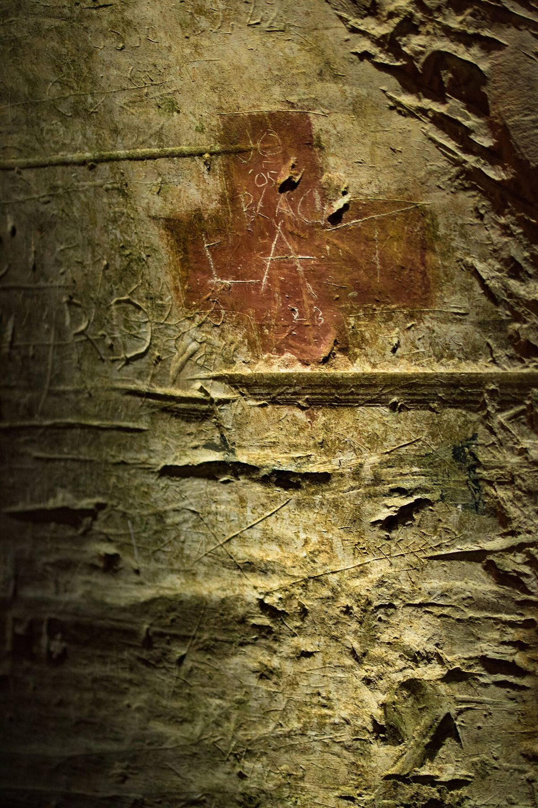

ESPUMOSO
Maison de Reims fundada en 1772 y marcada por Barbe-Nicole Ponsardin, la «viuda Clicquot», a quien se atribuye la mesa de removido; famosa por su etiqueta amarilla.

La casa fue fundada en Reims en 1772 por Philippe Clicquot. Su hijo François se casó con Barbe-Nicole Ponsardin, que enviudó en 1805, con 27 años, y decidió ponerse al frente del negocio en una época en que era muy poco habitual que una mujer dirigiera una empresa. De ahí procede el nombre de la marca, Veuve («viuda») Clicquot.
A Madame Clicquot se le atribuyen dos innovaciones importantes en la historia del champagne: la mesa de removido (pupitre), ideada hacia 1816 para concentrar los posos en el cuello de la botella y obtener un vino limpio, y el primer champagne rosado de ensamblaje conocido, elaborado en 1818 añadiendo vino tinto al blanco. También supo abrir mercados exteriores, en particular en Rusia.
La casa conserva sus botellas en antiguas canteras de creta excavadas bajo Reims, las crayères. Su estilo se apoya en el Pinot Noir, que aporta estructura a sus ensamblajes, completado con Pinot Meunier y Chardonnay y con una proporción importante de vinos de reserva.
Su vino emblemático es el Brut Carte Jaune, reconocible por su etiqueta amarilla, al que acompañan el Rosé, los vinos de añada y la cuvée de prestigio La Grande Dame, dedicada a la fundadora. Veuve Clicquot pertenece al grupo LVMH.
Hoy es una de las marcas de champagne más conocidas del mundo.
Ofrece visitas guiadas a sus crayères de Reims, con degustación, previa reserva.